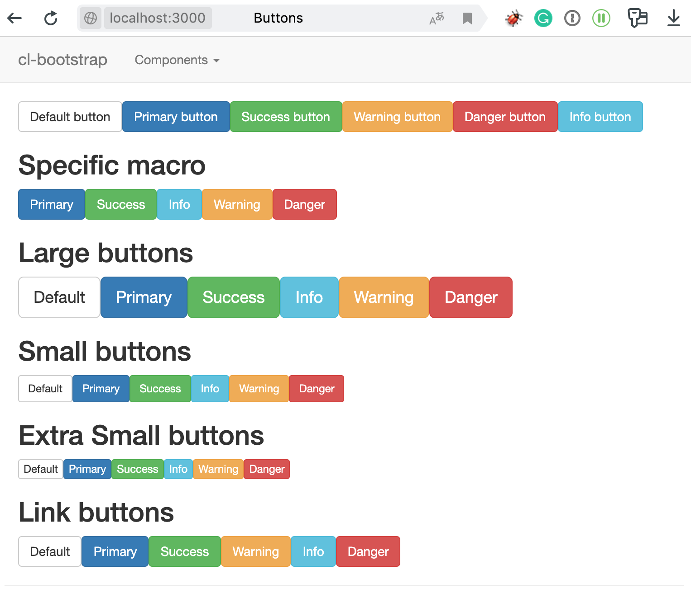

Lisp Project of the Day
cl-bootstrap
You can support this project by donating at:


cl-bootstrap
This is a library of Twitter Bootstrap widgets for cl-who.
It has many examples in the README and also an interactive demo where you can see all available components.
Here is an of example how to use it:
POFTHEDAY> (cl-bootstrap:bs-btn-primary "Hello Lisp World!")
<button type='button' class='btn btn-primary'>Hello Lisp World!</button>
">Hello Lisp World!</button>"This macro expands to the following cl-who code:
(cl-who:with-html-output (*standard-output*)
(:button :type "button" :class
(concatenate 'string "btn"
(if "primary"
(format nil " btn-~a" "primary"))
(if nil
(format nil " btn-~a" nil)))
"Hello Lisp World!"))This is a more complex example from cl-bootstrap's README:
(bs-navbar (:inverse t :brand "Brand")
(bs-navbar-nav ()
(bs-nav-li (:href "/panels") "Panels")
(bs-nav-dropdown (:title "Components")
(bs-nav-li (:href "/panels") "Panels")
(:li (:a :href "/buttons" "Buttons"))
(:li (:a :href "/labels" "Labels"))
(:li (:a :href "/modals" "Modal"))
(:li (:a :href "/tabs" "Tabs"))
(:li (:a :href "/dropdowns" "Dropdowns"))
(:li (:a :href "/tables" "Tables"))
(:li (:a :href "/carousel" "Carousel"))
(:li (:a :href "/navbars" "Navbars"))))
(bs-navbar-form ()
(:div
(:div :class "form-group"
(:input :type "text" :class "form-control" :placeholder "Search"))
(:button :type "submit" :class "btn btn-default" "Submit"))))Here is the most colorful page from the demo:

It seems this a good candidate to use together with the Weblocks.
Maybe I'll use it along with cl-org-mode to create a static site for the #poftheday project.
Brought to you by 40Ants under